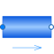

StaticPipeBasic pipe flow model without storage of mass or energy |

|
Diagram
{kind=link}
Information
This information is part of the Modelica Standard Library maintained by the Modelica Association.
Model of a straight pipe with constant cross section and with steady-state mass, momentum and energy balances, i.e., the model does not store mass or energy. There exist two thermodynamic states, one at each fluid port. The momentum balance is formulated for the two states, taking into account momentum flows, friction and gravity. The same result can be obtained by using DynamicPipe with steady-state dynamic settings. The intended use is to provide simple connections of vessels or other devices with storage, as it is done in:
Numerical Issues
With the stream connectors the thermodynamic states on the ports are generally defined by models with storage or by sources placed upstream and downstream of the static pipe. Other non storage components in the flow path may yield to state transformation. Note that this generally leads to nonlinear equation systems if multiple static pipes, or other flow models without storage, are directly connected.
Parameters (13)
| allowFlowReversal |
Value: system.allowFlowReversal Type: Boolean Description: = true to allow flow reversal, false restricts to design direction (port_a -> port_b) |
|---|---|
| nParallel |
Value: 1 Type: Real Description: Number of identical parallel pipes |
| length |
Value: Type: Length (m) Description: Length |
| isCircular |
Value: true Type: Boolean Description: = true if cross sectional area is circular |
| diameter |
Value: Type: Diameter (m) Description: Diameter of circular pipe |
| crossArea |
Value: Modelica.Constants.pi * diameter * diameter / 4 Type: Area (m²) Description: Inner cross section area |
| perimeter |
Value: Modelica.Constants.pi * diameter Type: Length (m) Description: Inner perimeter |
| roughness |
Value: 2.5e-5 Type: Roughness (m) Description: Average height of surface asperities (default: smooth steel pipe) |
| V |
Value: crossArea * length * nParallel Type: Volume (m³) Description: volume size |
| height_ab |
Value: 0 Type: Length (m) Description: Height(port_b) - Height(port_a) |
| p_a_start |
Value: system.p_start Type: AbsolutePressure (Pa) Description: Start value of pressure at port a |
| p_b_start |
Value: p_a_start Type: AbsolutePressure (Pa) Description: Start value of pressure at port b |
| m_flow_start |
Value: system.m_flow_start Type: MassFlowRate (kg/s) Description: Start value for mass flow rate |
Connectors (2)
| port_a |
Type: FluidPort_a Description: Fluid connector a (positive design flow direction is from port_a to port_b) |
|
|---|---|---|
| port_b |
Type: FluidPort_b Description: Fluid connector b (positive design flow direction is from port_a to port_b) |
Components (2)
Used in Examples (13)
|
Modelica.Fluid.Examples
Model of a pumping system for drinking water |
|
|
Modelica.Fluid.Examples.Tanks
Demonstrating the usage of SimpleTank |
|
|
Modelica.Fluid.Examples.Tanks
Two tanks connected with pipes at different heights |
|
|
Modelica.Fluid.Examples.Tanks
Show the treatment of empty tanks |
|
|
Modelica.Fluid.Examples.AST_BatchPlant |
|
|
Modelica.Fluid.Examples.AST_BatchPlant.Test
Tank with one time-varying top inlet mass flow rate and a bottom outlet into the ambient |
|
|
Modelica.Fluid.Examples.AST_BatchPlant.Test |
|
|
Modelica.Fluid.Examples.AST_BatchPlant.Test
Demonstrates a tank with one constant top inlet mass flow rate and a bottom outlet into the ambient |
|
|
Modelica.Fluid.Examples.AST_BatchPlant.Test
Demonstrates a tank with one constant top inlet mass flow rate and a bottom outlet into the ambient |
|
|
Modelica.Fluid.Examples.AST_BatchPlant.Test
Demonstrates a tank with one constant top inlet mass flow rate and a bottom outlet into the ambient |
|
|
Modelica.Fluid.Examples.AST_BatchPlant.Test
Demonstrates a tank with one constant top inlet mass flow rate and a bottom outlet into the ambient |
|
|
Modelica.Fluid.Examples.TraceSubstances
Demonstrates a room volume with CO2 accumulation |
|
|
Modelica.Fluid.Examples
Demonstrates the parameterization of a pump and a pipe for given nominal values |